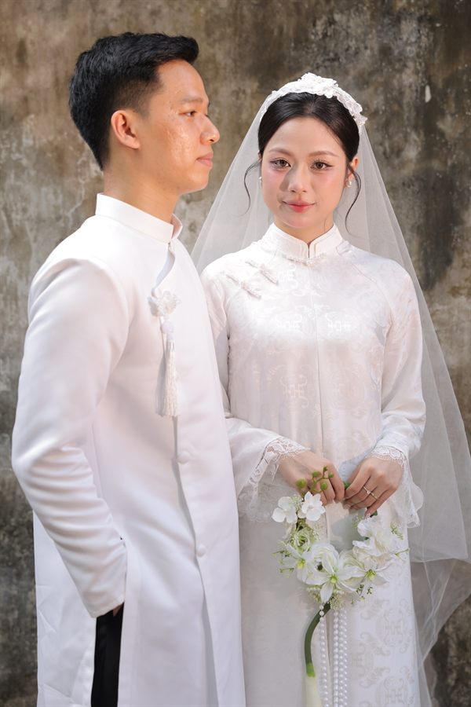
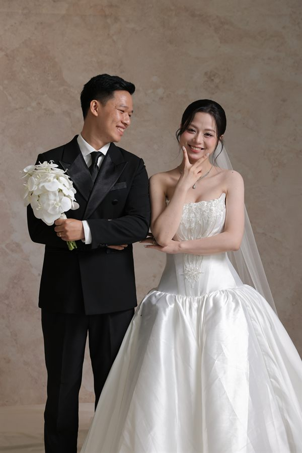
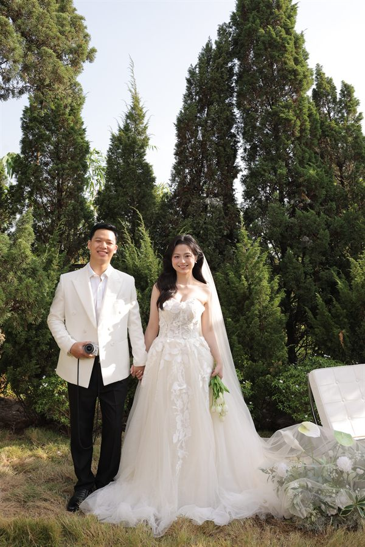

Trọng Quyết & Hoàng Anh
Tiệc cưới 15:30, thứ Sáu 27.11.2026
Chúng mình chụp ảnh cưới ở nhiều concept nên làm mỗi concept một tấm thiệp. Bạn chọn một tấm để mở nhé.
-

Kem & tulip Tông kem, tulip vẽ tay -

Báo cưới Báo vintage đỏ đô -

Unity Nâu be, vườn thông
Thiệp nào cũng có đủ giờ, địa điểm, chỉ đường và chỗ để xác nhận tham dự.